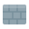
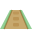
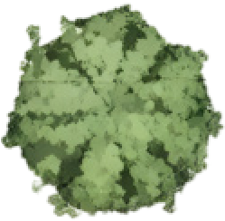
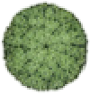
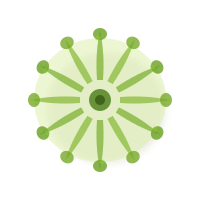
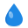

Loading your property…
Your Property
Step 1 of 7 — Place Water Source
← Back
Save & Continue →
+
−
Zoom
20
Zones
0
Area
0 sqft
1
Water Source
2
Landscape
3
Water Plan
Place Your Water Source
Choose your connection type and place it on the map.
🚿 Hose Tap
🔧 Manifold
⬤ Hover the map and click to place
Flow Rate
? What is GPM
gal / min
Landscape
Select a zone type, then draw it on the map.
Surfaces
Plants
Lawn
Garden Bed
Pool/Pond

Driveway

Walkway
House
Click map to draw
Zones:
0
Selected Zone
Label
—
Square feet
Delete Zone

Tree

Shrub

Grasses
Click map to place
Plants:
0
Selected Plant
Canopy —
—
16 ft
Species
✕
💧
—
Delete Plant
Water Plan
Generate your irrigation layout and head placement.
Sprinkler
Click map to place
Draw your zones first, then generate the water plan to see sprinkler head placement and pipe routing.
Selected Head
Rotor
Lawn
1.5
GPM
Radius:
15 ft
Arc:
180°
Delete Head
Clear Layer
Continue →

Flow Rate (GPM)
✕